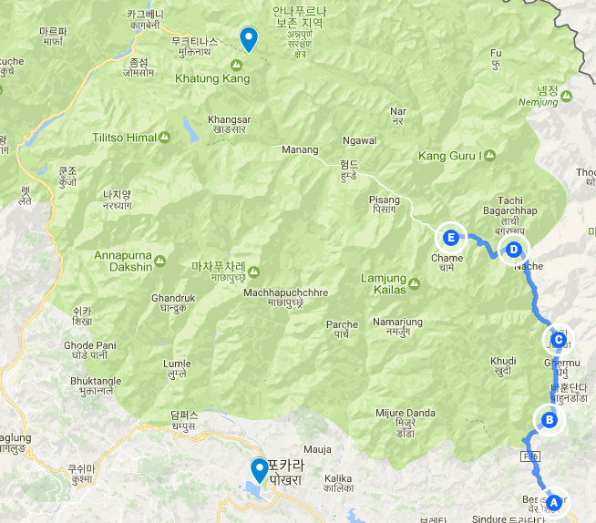
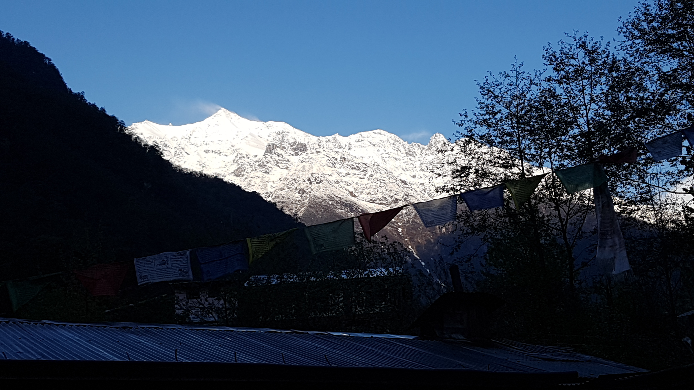
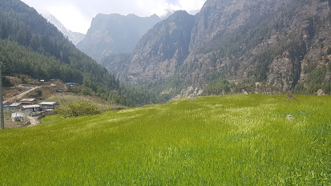
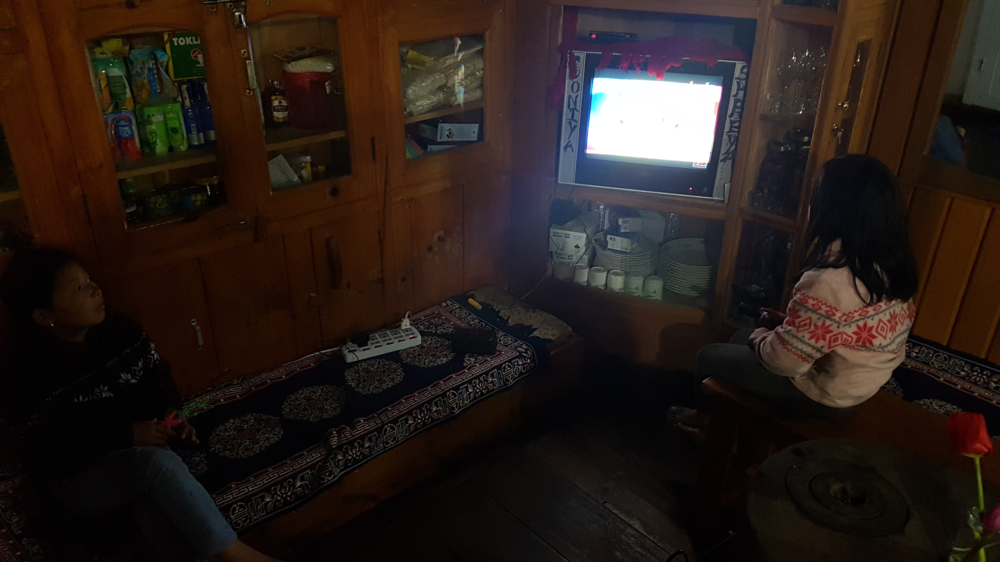

트래킹중 처음 만나는 설산에 압도 되었다
2017년 04월 15일
여행 D+12, 안나푸르나 D+4
오늘 이동한 경로 (D) -> (E) (총 14km)
bagarchhap(2160) -> chame(2710)

트래킹중 처음 만나는 설산에 압도 되었다.
어제 9시즘 자서 오늘 4시30분에 깼다. 그리고 6시까지 선잠을 잤다. 자꾸 뭐가 부스럭부스럭 거리는 소리가 나서 쥐인가 싶어 깜짝놀랐다. 후레쉬로 이리저리 비춰봤는데 모르겠다. 바깟벽에서 나는 소리인것 같기도하고. 그냥 다시 잤다. (어제 밤에 까먹었던 초콜렛 껍데기가 창문틈으로 들어온 바람에 의해 움직였던 소리로 밝혀짐)어제 롯지에서 이불을 받아서 다리쪽에 덥고 잤다. 잘때 쓴 넥워머와 비니는 아침에보니 벗겨져 있었다. 자다 더워서 잠결에 벗은듯 하다. 이곳은 생각했던것 보다 춥지 않았다.
아침에 세면을 하러 밖에나온순간 깜짝 놀랐다. 숙소 전경에 설산이 보였던 것이다. 드디어 설산을 만났다. 감격스럽다. 어제 밤새 비가 내렸었는데 산 위쪽에는 눈이 왔었나보다. 안나푸르나 트래킹 시작 4일차에 처음보는 설산에 압도되었다.
 숙소에 나와서 우연히 고개를 들었을때 만났던 설산
드디어 차길이 아닌 숲길을 걷다
2일동안 왜 힘든지 알았다. 어깨 가방 조여 지지 않아서 그랬다. 어깨와 어깨끈 사이에 약간 공간이 있어야 어깨가 아프지 않다. 무게는 허리띠로 바친다. 그래서 어깨끈을 꽤 넓게 했더니 가방이 많이 흔들렸었나 보다. 그래서 힘들었던것 같다. 어깨끈을 조금 더 조이니 어깨가 살짝 더 아팠지만 조금더 편안했다. 이렇게 트래킹해야겠다.
오랫만에 도로가 아닌 숲길을 걷는다. 그동안 계속 차가 같이 다니는 길을 걸어서 차가 지나다닐때마다 먼지도 날리고 조금 불편 했다. 진짜 산속 길을 드디어 만난것이다. 나는 처음에 이 트레킹이 완전 산길만 다닐줄 알았는데 거의 대부분 차가 다닐 수있는 비 포장도로로 다닌다는 사실을 알게되었다. 몇몇 사람들은 별로 좋아하지 않을지도 모른다. 그래도 나는 걷는것에 더 집중했기때문에 참을만 했다. 걷는내내 경치도 멋지기도 하고 말이다.
이 숲길은 가파른 언덕이라 앞서가는 패트릭이 힘들어한다. 나는 그래도 많이 힘들지는 않았다. 그래서 약간 기분 좋았다. 어제는 내가 따라가느라 힘들었기 때문이다. 역시 나는 숲사람이다 숲길을 만나니 힘이솓는다 너무좋다. 오늘 따라 힘들지가 않았다. 가방끈도 조이기도 했고 숲길도 걷기도 해서 그런가 보다. 정말 오늘 아침은 퍼팩트 모닝이다.
4일 동안 짐을 짊어 메고 트래킹하는 수많은 사람들을 봤지만 백인이 아닌사람은 한명도 보지 못했다. 모두 백인이다. 대부분 유럽사람들이 많았다. 잠시 쉬고 있는데 백인들이 많이 모였다. 또 백인들만모였다 온통백인천지다. 백인들 사이에 있으면 그들끼리는 의사소통이 원활하기 때문에 대화에 끼기 어렵고 위축된다. 그래도 그들은 그냥 나를 수많은 여행자 중 한명으로 생각할 것이다. 나혼자 어려워하는것일 뿐이다. 좀더 자신감을 가지고 이상한 문장을 사용하더라고 대화에 끼어드는것을 두려워하지 말자. 조금 더 자신감을 가져도 된다.
무척 멋진 경치를 가진 식당에서 점심을 먹었다. 메뉴는 달밧이다. 점점 달밧에 익숙해지고 있다. 처음에는 밍밍하고 별로였지만 이제는 나름 맛있게 먹는다. 높은 고지에서 단백질을 섭취하기가 쉽지 않다. 고기가 별로 없다고 한다. 근데 달 수프에 단백질이 포함되어 있다고 한다. 아마 녹두 콩에 단백질이 있는것 같다. 콩이니깐. 단백질이 있다는 이야기를 듣고 부터 달밧이 더 맛잇어졌다. 이곳에는 달밧 파워 : 24 hour라는 표지어를 많이 볼 수 있다. 그만큼 네팔사람들이 즐겨먹는 음식이기도 하고 영양소가 많기도 하기 때문일것이다. (하지만 내가 보기엔 대부분 탄수화물 파워다.)
잔디 촬영
점심을 먹는데 멀리 엄청 아름다운 잔디가 보였다. 바람에 물결치는 금잔디 같은 잔디다. 밥을 먹고 반드시 가서 영상을 찍겟다고 생각했다. 패트릭과 타쿠라한테도 말했다. 가서 사진찍자고. 점심을 먹고 출발하는데 이 둘은 그 쪽방향으로 갈 생각을 안한다. 그래서 고민하다가 나는 여기서 사진을 조금 찍고 갈테니 먼저가라고 했다. 그리고 곧 따라잡겠다고 했다. 이렇게 헤어져도 상관없다. 오히려 혼자 다닐때가 여유있게 더 많은 것을 즐길 수 있는것 같다. 같이가면 분명 빠른 속도로 가긴 할 수 있을 것이다. 아마 내일즘 헤어지게 될지도 모른다. 도착했는데 역시 멋진장면에 넋을 놓고 봤다.

이곳에서는 하루하루 빨래를 직접 해야한다. 세탁소나 세탁기를 전혀 찾아볼수 없다. 보통 3~4시 롯지 도착했을때 샤워를 하면서 같이 빨래를 하고 저녁에 말리고 다음날 아침에 가방에 넣고 그것을 그날 도착하는 롯지에서 입는다. 나는 사실 매일 손 빨래하는 훈련을 서울에 있을때부터 했기 때문에 익숙했다. 오히려 이렇게 빨래를 하니 빨래감도 안쌓이고 좋았다. 앞으로 맨날 이렇게 살아도 좋을것 같다.
보통 양말은 다음날 아침이 되어도 잘 마르지 않는다. 그래서 K누나에게 받은 초 유용한 빨래집게를 가방에 매달고 양말을 걸어놓는다. 그리고 걷다보면 점심즘 되었을때 뽀송뽀송하게 마른다. 이곳에서는 뭐든지 어떻게든 된다. 참좋다. 어제는 비가 왔기 때문에 속옷과 티셔츠도 마르지 않았었다. 그래서 오늘은 팬티와 양말을 매달고 걸었다. 한국에서는 상상도 할수 없는 일이지만 이곳에서는 가능하다. 왜냐하면 모두 그렇게 하기 때문이다.
사진은 때로는 그저그런 풍경을 더 멋지게 만들기도 하지만 진짜 멋진 풍경은 절대로 똑같이 담지 못한다. 그 장엄한 공간감을 2차원 평면인 사진에 절대로 담을 수 없는 것이다.
가는 길에 쌓인 돌을 만났다. 나는 이것이 한국만의 유일한 문화라고 생각했는데 이곳에서 만나니 반가웠다. 아마 네팔과 한국의 조상이 같은 문화를 공유했던 모양이다.
4일차에 몸이 산행에 적응된듯 하다. 거의 오늘 목적지 chame에 도착해 가지만, 오늘 그렇게 많이 힘들지 않았다. 확실히 몸이 걸음에 적응해 나가는것 같다. 아직까지는 건강에 문제는 없다. 첫날에 무릎이 조금 통증이 있었으나 무릎보호대랑 가끔씩 스틱을 사용해서 그랬는지 이제는 무릎 통증이 없다. 발목 염좌도 자주 겪어서 걱정했지만 아직 문제 없다. 스트레칭을 많이 하고 시작하려고 노력한다. 고산병 증세도 아직 고도가 높지 않아서 괜찮다. 어깨도 별로 아프지 않다. 트레킹 전에 신발을 헐렁하게 신고 10kg 가방을 메고 훈련을 한번했는데 그때 살짝 물집이 잡혔었다. 이제 신발끈을 최대한 조이고 걷기 때문에 물집도 잡히지 않았다. 나름 신발이 발에 맞는것 같다. 마음에 드는 등산화다. 아직까지는 몸상태가 모든것이 OK다.
롯지에서 뜨거운 물로 샤워를 했다. 이것이야말로 천국이다. 하지만 밖에 기온이 낮고 바람이 많이 불어서 그런지 샤워를 하고 나면 곧 엄청나게 체온이 떨어진다. 특히 손발이 엄청 시렵다. 그상태에서 빨래를 할때 빨래 감을 꽉 짜게되면 손 근육에 통증이 느껴진다. 내일부터 이것을 조심해야겠다. 앞으로 더 추워질텐데 빨래를 할수 있을까? 걱정된다.
이곳은 모든 숙소에 WIFI 가 있지만 대부분 잘 동작을 하지 않는다. 가끔씩 되다가 끊기다가 한다. 하지만 오랫만에 인터넷 연결이 잘되는 WIFI가 있는 숙소에 묶게 되었다. 트래킹 출발 전 윈드폴 게스트하우스에서 내게 도움을 많이 준 K 누나의 깜짝 놀랄만한 소식을 들었다. 3년째 세계여행중인 이사람은 원래는 모든여행을 마치고 몇주뒤에 한국으로 돌아갈 예정이었는데, 한국행 비행기를 돌연 취소했다고 한다. 그리고 곧 아프리카로 갈 예정이라고 한다. ㄷㄷㄷㄷ 그래서 여행은 3년 6개월로 연장되었다고 한다. 진짜 이곳에 오기전에 1년 여행도 길다고 생각했는데 여기와서 보니 1년여행은 정말 짧은 여행이다. 2년 3년 여행자들이 수두룩하다. 심지어 그들은 한국인이었다.. 심지어 그들이 모두 부자라서 그렇게 다니는게 아니다. 진짜 장기여행자들은 모두 돈이 그렇게 많지 않은것 같았다. 진짜 존경스럽다. 진짜 여행자다. 나도 이 여행 막바지쯤에 모든 것을 버리고 여행을 계속 할 수 있을까? 일단 회사부터 짤리게 될텐데 내가 그것을 선택할 수 있을까? 음. 지금은 절대 못할 것 같다.
여기서의 하루 일과는 보통 아침에 걷는것을 시작해서, 3~4시 롯지 도착. 샤워 빨래, 그리고 공용공간(식당)에 모여서 나는 보통 일기를 쓰고 가끔씩 대화하는 시간을 갖는다. 책을 많이 읽는다고 하는데 나는 일기쓰면 진이 빠져서 잘 읽지는 못하겠다.
옆에있는 패트릭은 벌써 소설 한권을 다 읽어간다. 본인 스스로는 엄청난 슬로우 리더라고 하는데 벌써 책한권이 다 끝나간다. 패트릭이 읽고 있는 책이 흥미로운데 커트 보니것의 소설이다. 나도 작년에 커트 보니것의 책을 2권이나 읽었었기 때문에 서로 무척 흥미롭게 대화할 수 있었다. 이 친구가 읽고있는 책은 Cat's Cradle (한국어 제목 : 고양이 요람) 인데 엄청 재밌다고 한다. 나도 나중에 킨들 영어버전으로 한번 도전해 봐야겠다.
네팔사람들은 영어를 무척 잘한다. 왜그런가 했더니 애들부터 영어로 된 만화를 즐겨 보고 있다. 이게 그 이유다. 생활이 영어를 사용하는 환경인것이다. 수 많은 관광객들을 상대해야 하기도 하고 시청거리도 영어로 된것을을 보니 당연히 영어를 잘 할 수 밖에.

밤에 나갔는데 별이 엄청 많았다. 진짜 어두운곳에가서 별을 실컷 봐야지